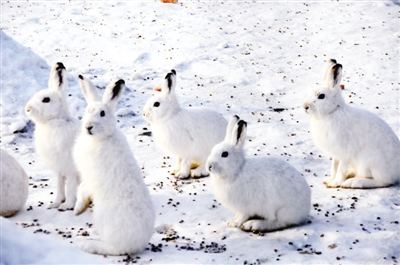

<!DOCTYPE html>

<html lang="en">
    <head>
        <meta charset="utf-8" />
        <title>雪兔</title>
    </head>
    <body background="000.jpg"></body></body>
    <font color="red" size="20"<h1><em>雪兔</em><h1></font>
    <h2>雪兔（拉丁学名：lepus timidus），是寒带、亚寒带代表动物之一，是一类个体较大的野兔，体长一般在510毫米左右。</h2>
    <h3>兔科兔屬的哺乳動物。在中國大陸，分布於黑龍江、內蒙古、新疆等地，一般生活於森林以及森林草原（沿河灌叢）。</3>
    
</html>
<hr>
    <a href="003.html">上一頁</a>
    <a href="004.html">下一頁</a>
    <a href="index.html">主頁</a>
    </body>
</html>